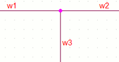
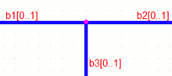
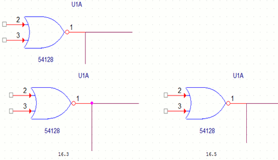
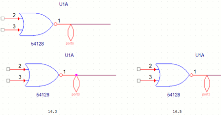

The creation of a junction dot when displaying connectivity in Capture uses the concept of Junction on straight wire-break only.
Junction on straight wire-break only
If a horizontal or vertical straight-wire is broken at a point between the end-points of the wire because of a connection with one or more connection objects (another wire, port, off-page connector, global, part pin or hierarchical pin), a junction dot is created at the point of connection.
- Consider a horizontal (or vertical) scalar wire joined with another scalar wire originating at the same connection point and drawn in the opposite direction. In this case, a junction dot is created if any of the following objects is placed at the point of connection of these two wires:
- An orthogonal scalar wire
- An off-page connector
- A scalar schematic port
- A scalar global.
- A scalar pin
- A scalar hierarchical port
- A bus entry point. However, in the case of a bus entry point, the junction dot will not display.
Example: Say the wire w1 is joined with
the wire w2, originating at the same connection point and
drawn in the opposite direction. A junction dot is created
if an orthogonal wire w3 is placed at the point of
connection of these two wires.

- As in the case of scalar wire, consider a horizontal (or vertical) bus or NetGroup joined with another bus or NetGroup originating at the same connection point and drawn in the opposite direction. A junction dot is created if any of the following objects is placed at the point of connection of the two objects:
- An orthogonal bus or NetGroup
- A bus or NetGroup off-page connector
- A bus or NetGroup schematic port
- A bus or NetGroup global
- A bus or NetGroup pin
- A bus or NetGroup hierarchical port
- A bus entry point. However, in the case of a bus entry point, the junction dot will not display.
Example: Say the wire bus or NetGroup
(b1[0..1]) is joined with the bus or NetGroup (b2[0..1]),
originating at the same connection point and drawn in the
opposite direction. A junction dot is created if an
orthogonal bus or NetGroup (b3[0..1]) is placed at the
point of connection of these two objects.

-
Since a junction is the attribute of a wire, it will
appear only on a wire-end. If three other types of
For example, if a port, an off-page connector, and a ground are shorted together, a junction dot is not created at the point of connection. connection objects are shorted together, no junction is created. -
A junction dot is created on a bus or NetGroup wire
irrespective of the widths of the buses or NetGroups
constituting the connection.
For example, a junction is created if the buses or NetGroups b1[0..1], b2[0..3] and b3[0..5] are shorted together. - A junction dot can be explicitly added or removed by a user only in the case of crossing wires.
Junction Dot Formation v16.5 and prior releases
With the implementation of Junction on straight wire-break only, there are some differences in the creation of junctions in v16.5 and later releases of Capture. However, all designs created in releases prior to v16.5 will open with all the existing junctions intact. The enhanced junction creation logic will apply only when any object contributing to a junction is edited on the schematic page or the page is completely re-evaluated by the system.
- In Capture v16.5, a junction cannot be placed on slanting crossing wires. This is allowed in prior release.
- In Capture v16.5, a junction dot cannot be removed from a T-section. This is allowed in prior releases.
-
Depending on the order of the creation of objects, in
prior releases, a junction dot may or may not be created
when two orthogonal wires are connected with a part pin
or any other connectivity object. In v16.5, a junction
dot will not be created because no straight wire is
broken at the point of connection.
 -
Depending upon the order of creation of objects, in prior
releases, a junction dot may or may not be created when
one wire is connected with two other connectivity
objects. In v16.5, a junction dot will not be created,
because no straight wire is broken at the point of
connection.
 - In prior releases of Capture, if a user drags one of the opposite wires of the T-formation to form a slanting wire, the junction dot remains intact. In v16.5, the junction dot will be removed because no straight wire is broken at the point of connection.